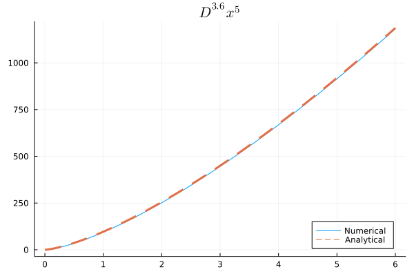

Arbitrary Order Fractional Derivative
While most of the algorithms only support for limit scope, we also provide arbitrary order fractional derivative, thanks to the outstanding work of Prof Igor Podlubny for Triangular Strip Matrices.
In FractionalCalculus.jl, you can compute arbitrary fractional derivative using the specific algorithm RLDiff_Matrix:
julia> fracdiff(f, α, end_point, h, RLDiff_Matrix())For example, we want to calculate the $3.6$ order fractional deriavtive of $f(x)=x^5$ in interval $[0, 6]$:
julia> fracdiff(x->x^5, 3.6, 1, 0.001, RLDiff_Matrix())We can also compute the analytical solution:
\[f(x)=\frac{\Gamma(6)}{\Gamma(2.4)}x^{1.4}\]
Aftrer we plot the numerical and the analytical, we can see FractionalCalculus.jl obtain a high precision:
